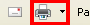
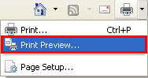
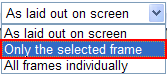
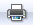

In order to properly print your
report in Internet Explorer, you will need to do the following:
Find the Print button in your browser's tool bar

Instead of choosing "Print", click on "Print Preview..."

In the Print Preview window, choose "Only the selected frame"

Click the Print button  from within the Print Preview window